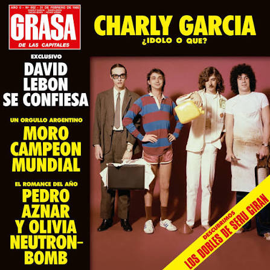
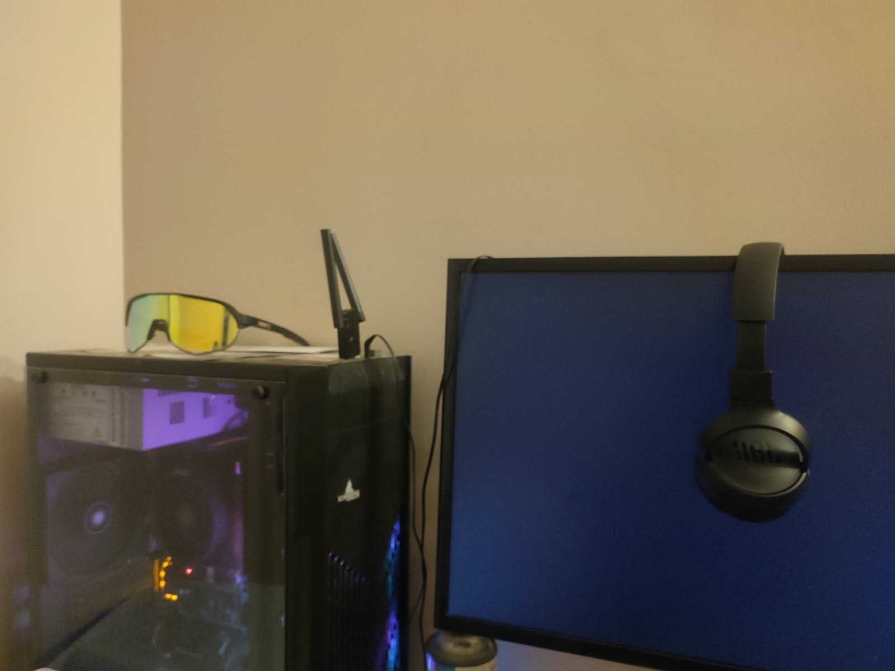

La historia que nadie te había contado
"La historia que te sorprenderá: sus gustos, sus sueños y lo que el futuro le reserva."
En esta edición especial te presentamos a Tomás Gabriel Cabra Castro: quién es, qué hace con su tiempo libre, sus pasiones más profundas y los planes que tiene para el futuro.
— ¿Quién eres y de dónde vienes?
Soy Tomás Cabra, tengo 16 años y naci en Bogotá, voy a graduarme este año y a empezar mi estudio profesional, he vivido en varios lugares pero actualmente me encuentro en Bogota donde voy a estudiar y a trabajar.
— ¿Cómo te describirías a ti mismo/a?
Soy una persona algo perezosa, me gusta leer y tener conocimiendo de las cosas, en este momento estoy en un tecnico de SENA que me ayudara en mi futuro por el simple hecho de tener mas conocimientos
— ¿Qué te hace único/a?
Lo mas posible es que poco o nada me hagan unico, soy un ser vivo completamente ordinario que no ha tenido mucha suerte

La Grasa de las Capitales
Me gusta mucho el rock en general pero hay un album que destaca entre mis gustos, de una banada Argentina llamada Seru Giran

Suelo jugar bastantes videojuegos ya que tengo un pc que puede con la mayoria de ellos, pese a esto no tengo uno favorito me gustan los juegos de combate
Suelo leer a Mario Mendoza pues en mi casa hay varios libros de el y me agrada su forma de escribir, tambien suelo leer .
Suelo ver series bastante seguido, ademas de escuchar musica siempre que puedo.
Como ya lo mencione antes suelo jugar bastantes videojuegos al tiempo, especialmente de combate o que pongan a prueba mis habilidades
Voy a graduarme de este colegio para poder seguir con mi proyecto de vida
Conseguir la doble titulación en la universidad nacional, una en economia y otra en contaduria publica
Tras obtener un buen trabajo me gustaria poder viajar por el mundo